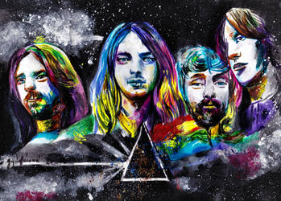
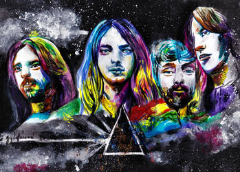

Nieuws
In 2022 hervormden Gilmour en Mason Pink Floyd om het nummer "Hey, Hey, Rise Up!" uit protest tegen de Russisch-Oekraïense oorlogTour
Het laatste live optreden met Roger Waters als lid van Pink Floyd was tijdens de The Wall-tour op 17 juni 1981 in Earls Court, Londen. In 1982 verscheen een film van The Wall, waarin Bob Geldof de rol van Pink speelde.merch
Koop een van onze T-shirts!Gallerij
Onze gallerij bestaat uit veel foto's en herinneringen van optredes en cover art 
